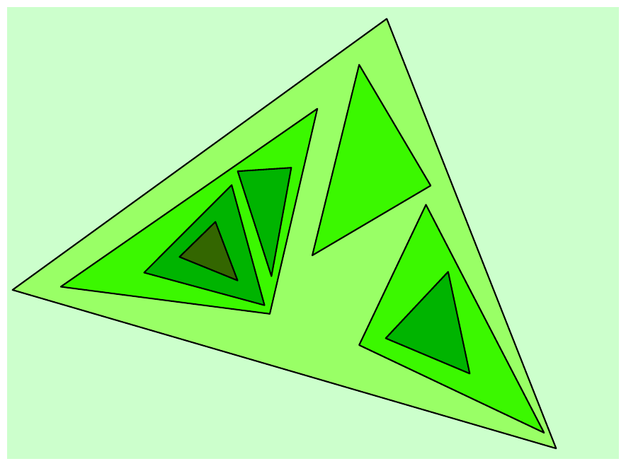

ICPC World Finals 2008 · Problem H
You probably never heard of the painter Peer. He is not well known, much to his regret. Peer was one of the inventors of monochromy, which means that each of his paintings has a single color, but in different shades. He also believed in the use of simple geometric forms.
During his triangle period, Peer drew triangles on a rectangular canvas, making sure their borders did not intersect. He would then choose a color, and fill the regions. Peer would paint the outermost region (the canvas itself) with the lightest shade of the color chosen. Then step by step, he would fill more inner regions with a darker shade of the same color. The image below is one of his “Forms in Green” paintings.

In a way the process was quite mechanical. The only thing Peer considered difficult was to decide, after drawing the triangles, how many different shades he would need. You must write a program to do that calculation for him.
Your program will have a collection of triangles as its input. It should calculate the number of different shades needed to paint the regions according to the given rule.
Your program must also detect the rare times that Peer makes a mistake and draws triangles that intersect. Two triangles are considered intersecting if the edges of one triangle have at least one point in common with the edges of the other. In that case, the collection of triangles is invalid.
The input file contains multiple test cases. The first line of each test case contains a single non-negative integer n (n ≤ 100000), which is the number of triangles in the test case. The following n lines of the test case contain the descriptions of triangles in the format x1 y1 x2 y2 x3 y3, where xi, yi are integers (-100000 < xi, yi < 100000) that are the coordinates of the vertices of the triangles. The three points are guaranteed not to be collinear.
The last test case is followed by -1 on a line by itself.
For each test case, print the case number (beginning with 1) and the number of shades needed to fill the regions if the test case is valid. Print the word ERROR if the test case is invalid (two or more triangles in the test case intersect).
8 8 3 8 4 7 4 14 13 -1 9 9 0 1 8 7 7 4 10 5 10 11 8 13 12 9 10 11 10 11 9 2 7 9 1 10 6 5 5 5 6 8 6 9 2 9 5 6 4 2 0 0 1 0 0 1 2 0 1 1 1 -1 -1
Case 1: 5 shades Case 2: ERROR